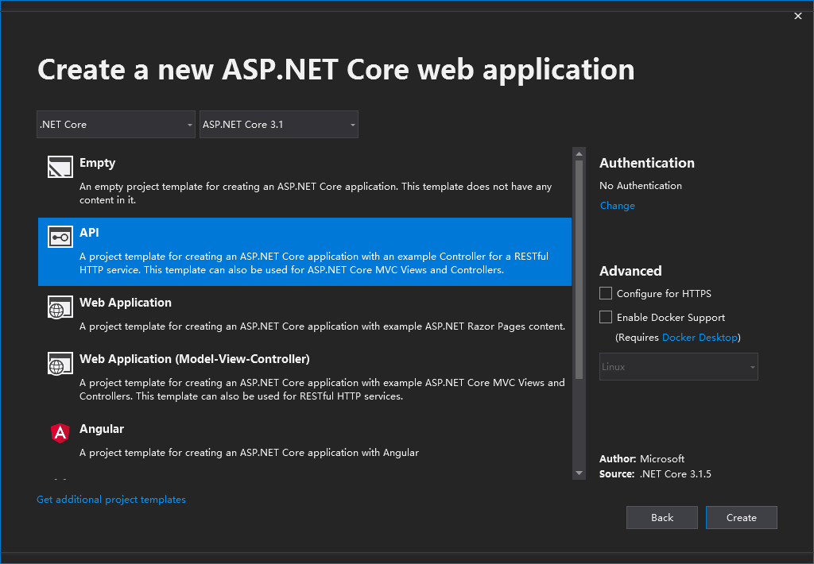
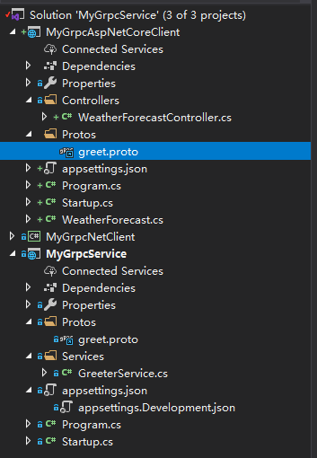
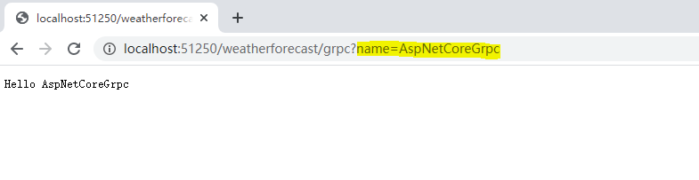

（三）通过AspNetCore客户端访问AspNetCore Grpc服务
上一篇（二）通过.Net控制台客户端访问AspNetCore Grpc服务我们知道如何通过.Net控制台客户端访问AspNetCore Grpc服务，本篇我们一起来看下如何通过AspNetCore客户端访问Grpc服务。
gRPC通过集成HttpClientFactory来提供一种集中的方式来创建gRPC客户端[1]，接下来我们就借助HttpClientFactory来实现AspNetCore客户端访问Grpc服务。
-
首先打开我们之前创建的
MyGrpcService.sln解决方案，新建一个AspNetCore WebApi工程，工程名称就叫MyGrpcAspNetCoreClient，Framework版本为.NetCore3.1。
 -
因为HttpClientFactory功能通过Grpc.Net.ClientFactory包提供，所以我们安装下这个nuget包。
-
在添加proto文件之前，需要先安装Grpc.Tools nuget包，不然无法将proto文件编译成代理契约类。另外，nuget包Google.Protobuf也是必须要安装的。
-
在项目里新建一个Protos文件夹，将greet.proto文件通过链接(Link)的方式添加到项目中的Protos文件夹下（这里项目中的文件夹名字不一定非要是Protos，可以自定义）。
-
这里对MyGrpcAspNetCoreClient工程文件需要设置一下
GrpcServices="Client"，表示proto文件用来生成客户端契约代理类，设置如下：1
2
3
4
5<ItemGroup>
<Protobuf Include="..\..\Protos\greet.proto" GrpcServices="Client">
<Link>Protos\greet.proto</Link>
</Protobuf>
</ItemGroup>执行完上面的操作后，解决方案代码的目录看起来应该是这样的。
 -
现在我们来添加gRPC客户端的创建代码，打开Startup.cs文件，在ConfigureServices的最后增加如下代码：
1
2
3
4services.AddGrpcClient<Greet.Greeter.GreeterClient>(options =>
{
options.Address = new Uri("https://localhost:5001");
});这样GreeterClient就以transient方式注册到IOC容器中了，在需要使用的类中，直接通过构造器注入即可。
-
接下来我们在WeatherForecastController WebApi控制器中新增一个
grpc的HttpGet Api来通过GreeterClient发起gRPC服务调用。1
2
3
4
5
6
7
8
9
10[]
public async Task<IActionResult> InvokeGrpcHello(string name)
{
var result = await _client.SayHelloAsync(new Greet.HelloRequest
{
Name = name
});
return Ok(result.Message);
} -
先运行gRPC服务端，在运行AspNetCore客户端，并在浏览器中输入name参数，类似
http://localhost:51250/weatherforecast/grpc?name=AspNetCoreGrpc，如果运行正常的话将看到如下内容：

¶结语
到这里我们就通过AspNetCore WebApi完成了gRPC服务的调用，可以看到并不需要很多代码就可以做到。下一篇我们将看下怎么实现通过Http的方式（基于HTTP2协议而不需要TLS）来访问gPRC服务。
¶源码
Demo代码已经上传 https://github.com/jeremyLJ/aspnetcore-grpc-demo